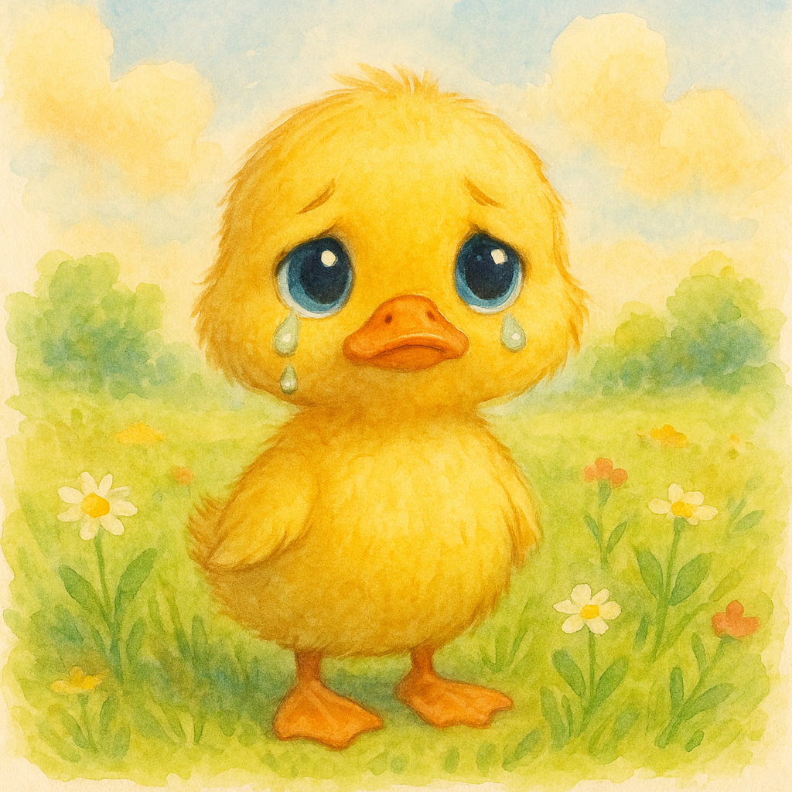
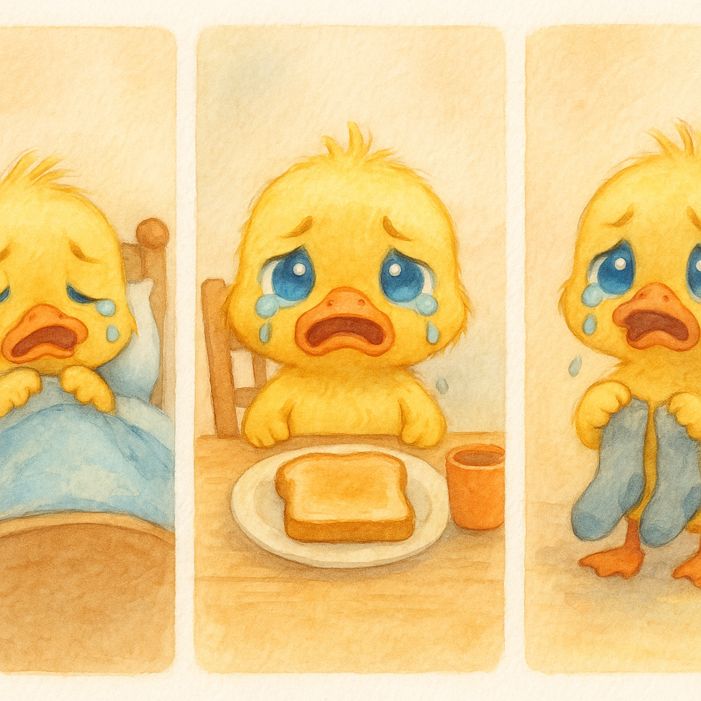
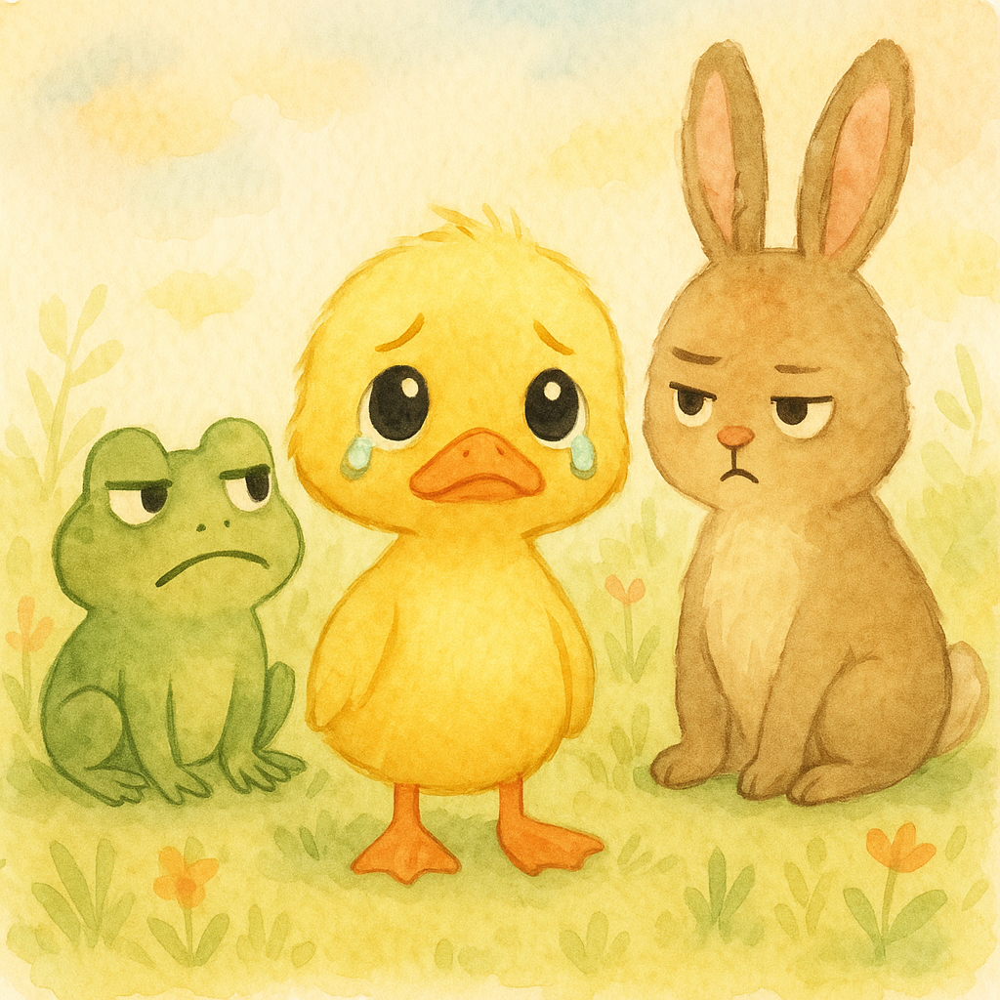
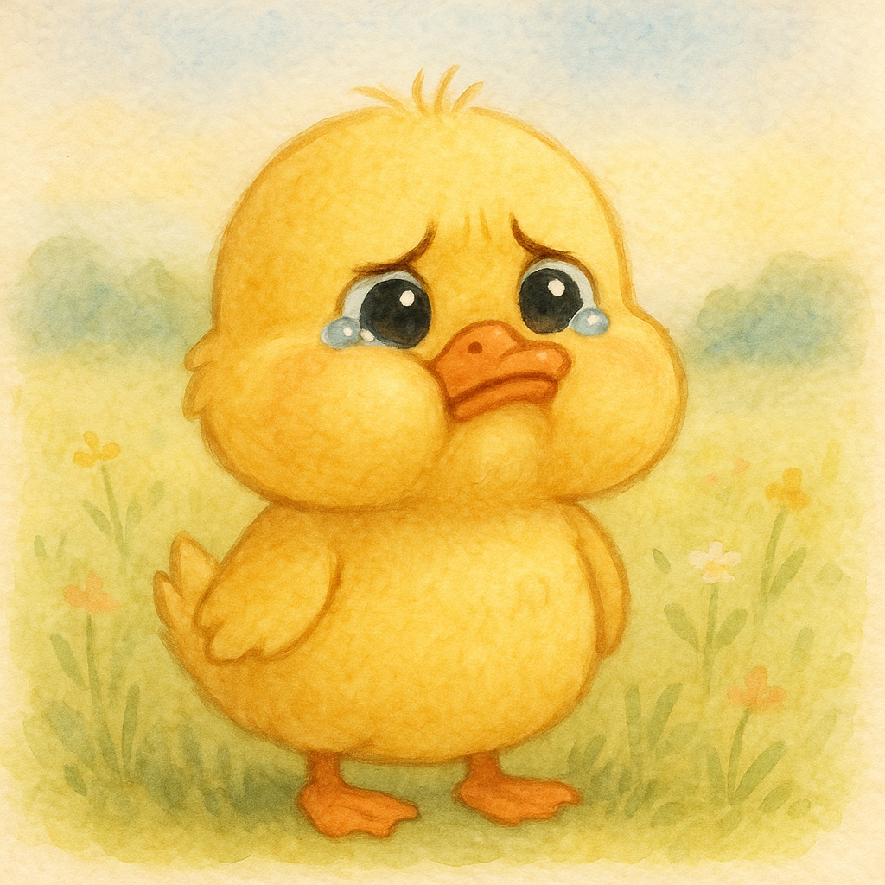
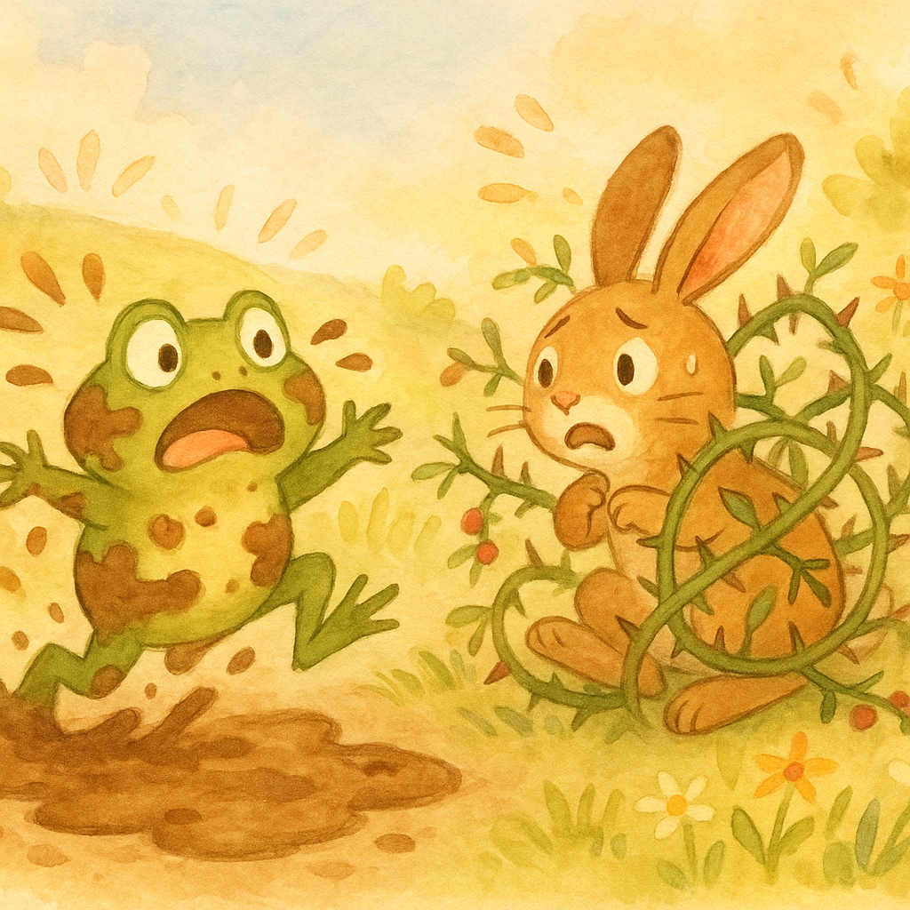
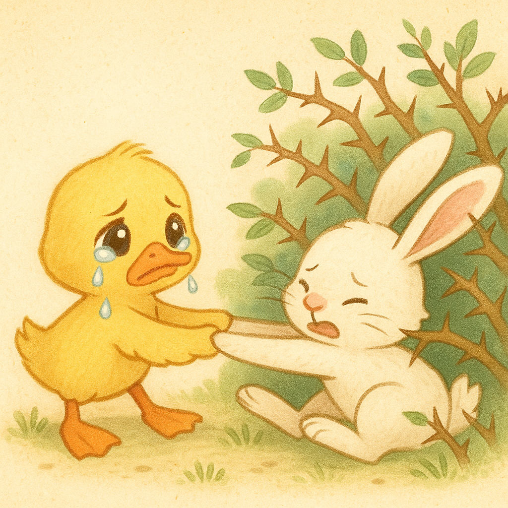
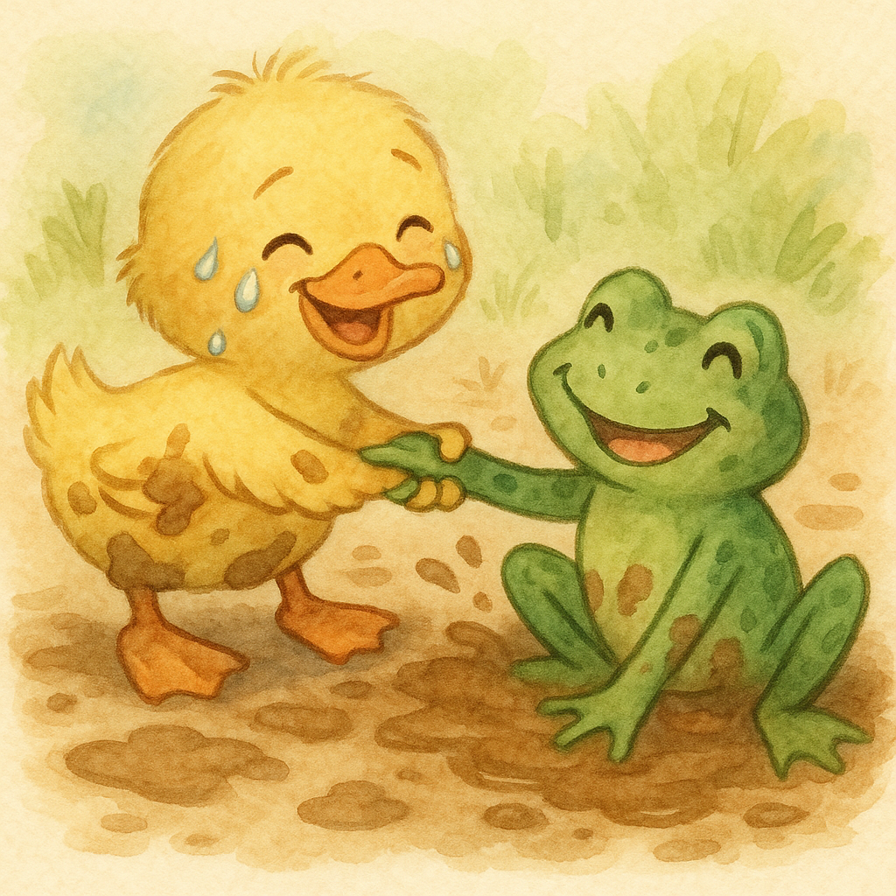
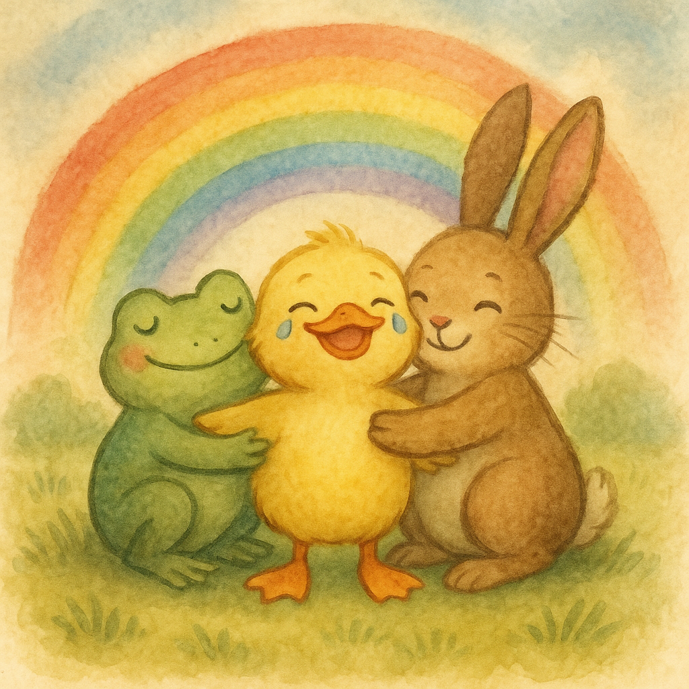

There was a little duckling named Sunny. Sunny cried a LOT.
1

There was a little duckling named Sunny. Sunny cried a LOT.
1

He cried when he woke up. He cried when his toast was too crunchy. He cried when his socks were inside out.
2

"Why do you cry so much?" asked the other animals. "Crying is for babies!"
3

Sunny felt bad. "Maybe I AM just a crybaby," he sniffled. He tried really hard not to cry.
4

But then something BIG happened. The frog fell in the mud! The rabbit got stuck in a bush! Everyone was scared!
5

Sunny started to cry. But then... he wiped his tears. And he helped.
6

He cried the whole time he was helping. But he KEPT helping. "You're crying AND being brave!" said the frog.
7

Sunny learned something important. Crying doesn't mean you're weak. You can cry AND be tough at the same time.
8